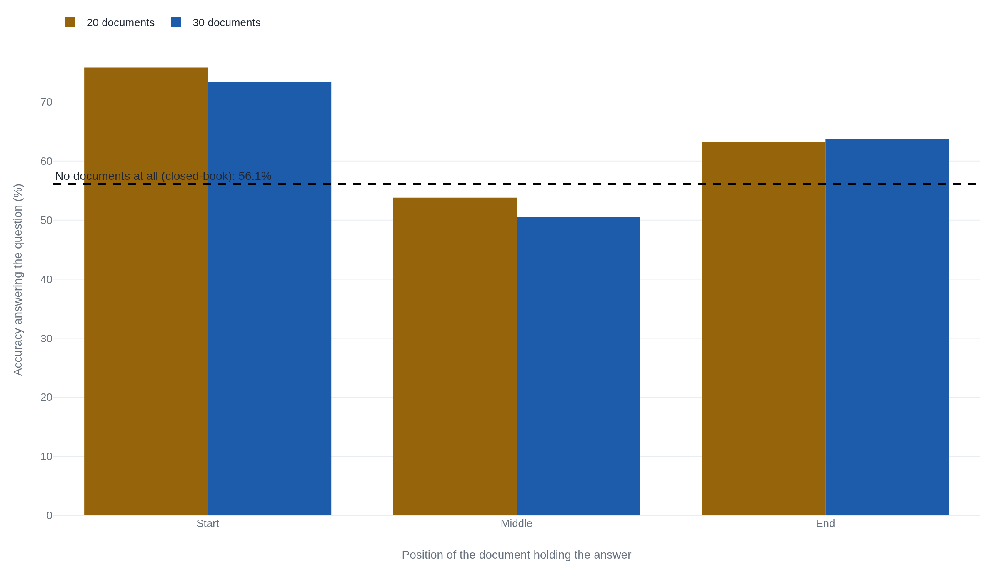

A model given the right document can still score worse than one given none at all
In a 2023 study, GPT-3.5-Turbo answered correctly 53.8% of the time when the right document sat in the middle of 20 documents, worse than the 56.1% it scored with no documents at all.
Why this matters
You mention something early on, a name, a constraint, a fact buried in a pasted document. Thirty messages later the model answers as if you never said it. The standard explanation is that the conversation ran long and the old messages fell off the end. That is sometimes correct, and it has an easy fix: a bigger context window, or a shorter conversation. It is also, on its own, incomplete. A model can lose a fact sitting in the exact middle of a prompt that still fits, with room to spare, and that failure does not shrink just because the window gets bigger. This lesson traces both failures to how a chat model reads what you send it, and shows the numbers proving the second is not a milder version of the first.
- 01
- Every context window has a second number, and it is smaller: how the length a model will accept differs from the length it actually uses well.
- 02
- An attention head is a weighted average that computes its own weights: the softmax weighting this lesson's mechanism section builds on.
The transcript is the only memory a chat model has
Every reply a chat model produces starts from nothing. No state survives inside the model from one API call to the next, no running notes, no memory of the last message. Anthropic says this plainly about its own system: the Messages API “is stateless,” so a client must resend the entire conversation every time it wants a reply that accounts for what came before.1 OpenAI describes the same arrangement for its own models: the API holds no memory of past requests, and the calling application must resend the conversation's full history with each new call to keep the exchange coherent.2
Turn one of a conversation sends the model a short request: a system prompt and a first message. By turn thirty, the request looks nothing like thirty messages arriving one at a time. It is one long document, the system prompt plus every earlier turn pasted in ahead of the newest line, submitted whole as though for the first time. Nothing about the model aged between those two calls. Whatever it appears to know about the conversation is only what was typed, again, into that one document. A fact from turn three reaches turn thirty only if the words describing it are still sitting somewhere inside the text sent at turn thirty.
That already narrows what “the model forgot” can mean. It cannot mean a memory faded somewhere between calls, because there was no such memory to fade. It can only mean that the document sent this time failed to contain the fact, or contained it in a form the model failed to use. That differs from a fact postdating its training data, a limit that a model's weights freeze the moment its training run ends covers. The easy assumption is that the conversation simply grew too long, so something had to be cut. That assumption is half right.
Running out of room is one real failure
The document assembled at turn thirty has to fit inside the model's context window, the largest stretch of text it accepts, already covered in Every context window has a second number, and it is smaller. That number is finite, and a long enough conversation eventually exceeds it. When it does, the application sending the request has to do something: drop the oldest turns, compress them into a shorter summary, or refuse the request outright. Whichever it picks, the same rule from before still holds. The model only ever sees the document it was actually handed.1 If a dietary preference from turn three got cut to make room, it is not misremembered. It is simply not there.
This failure has a real fix. Ask for a larger context window, or have the application summarize more aggressively before it trims, and this specific problem gets smaller. Independent write-ups on this exact behavior draw the same line. A transcript that no longer fits is a different problem from a transcript that fits but is not read evenly. The two get confused constantly, because both present the same way to the person typing.3 The failure that follows is not a bigger version of running out of room. It is a different failure, with a different fix, and it shows up even when nothing was ever cut.
The middle goes quiet even when everything still fits
In 2023, a team led by Nelson Liu built a direct test of that second failure. They gave GPT-3.5-Turbo a set of documents, one of which held the answer to a question. They moved that one relevant document to a different position in the stack on each run: sometimes first, sometimes last, sometimes buried in between. Every version of the test used the same number of documents and the same total length, comfortably inside the model's 16,000-token window, so nothing was ever cut and no summary was ever built. The only thing that changed was where the answer sat.4
The accuracy traces a clean U. With 20 documents, the model answered correctly 75.8% of the time when the relevant one came first, 63.2% of the time when it came last, and only 53.8% of the time when it sat in the middle. Stretch the same test to 30 documents and the shape holds: 73.4% at the start, 63.7% at the end, 50.5% in the middle.4

The sharper comparison is not between positions. It is between having the document at all and not having it. Give the same model no documents, just the bare question, and it answers correctly 56.1% of the time from what it already knew.4 That is higher than 53.8% and higher than 50.5%, the model's own scores when the correct document was sitting right there in the prompt, just in the middle. Handing the model the answer, badly placed, scored worse than handing it nothing.
The pattern is not an artifact of one task. Liu's team ran a second test, key-value retrieval, looking up one value among as many as 140 planted pairs. The worst-case accuracy for a pair buried in the middle fell to 45.6%, again comfortably inside the window.4 One fix helped: repeating the question both before and after the documents recovered most of the loss, reaching perfect accuracy at 300 pairs.4 That is a change to how the prompt is built, and it depends on someone doing it on purpose. The broader problem doesn't fade as windows grow. RULER, testing seventeen models to 128,000 tokens, finds only about half still acceptable past roughly 32,000.5 It reports one score per length, not by position, so it can't confirm the U-shape at scale; only Liu's paper does.4
Where the U-shape actually comes from
An attention head answers each token's question by scoring it against every other token, turning those scores into a set of weights that sum to one, then blending accordingly. That budget of one is the first piece of the mechanism: a fixed total handed out across however many keys are competing for it, exactly as Vaswani and his co-authors defined the operation.6 Feed the head 20 documents' worth of tokens instead of a handful, and that same total of one has to stretch across thousands of competitors. Most individual tokens' share of it, on average, gets thinner. That alone predicts a longer prompt should be a harder prompt. It does not, by itself, predict that the middle of that prompt should fare worse than its own edges.
Two more pieces close the gap. The first is causal masking. A decoder-only model restricts every token to scoring only the tokens before it, never the ones after. So the last tokens in a prompt are the only ones with a full view back across everything else, while the first token anchors every later score no matter what it contains.7 The second is position itself. A model marks how far apart two tokens sit with a scheme, most commonly rotary position embedding, or RoPE, which rotates each token's representation by an angle set by its position. A query's felt similarity to a key decays as the distance between them grows, a property built directly into the rotation rather than added on afterward.89 Ofir Press and his co-authors built an alternative, ALiBi, that instead subtracts a penalty from the raw attention score in direct proportion to that same distance, a blunter bias toward whatever sits close to the token doing the asking.10 Either way, the two edges of a prompt get a head start that tokens buried in the middle do not.
Both newer schemes were also built to fix a related problem: a model trained on sequences up to some length behaves unpredictably past it, since it never practiced scoring across a longer distance during training. Press's team showed ALiBi lets a model trained on short sequences generalize cleanly to much longer ones at test time, evidence that at least part of how position is handled is a trained habit, not a fixed law of the architecture.10 That is where the settled part of the account stops. It is settled that softmax attention divides a fixed budget across every competing token, and that position schemes make the two edges of a prompt structural favorites for that budget. It is not settled why the resulting dip is as sharp and as consistent as Liu's numbers show, or how much of it a better positional scheme actually removes. Liu's team tested models built specifically for long context, not merely stretched after the fact, and the U held anyway.4 A scheme that widens how far a model can generalize has, so far, done that more reliably than it has quieted what happens to the middle of a prompt already well inside the model's reach.
The takeaway
Two different things happen when a chat model forgets, and they call for two different fixes. The first is running out of room. The conversation's full history no longer fits the context window, so whatever is serving it drops or compresses the oldest turns, and the fact you need is simply absent from the document the model is shown. A bigger window, or better summarization before the trim, fixes this one. The second happens with room to spare: the model is handed the fact, unmodified, sitting in the middle of a prompt well inside its limit, and still fails to use it. Liu and her co-authors measured this directly. Accuracy on the same 20 documents fell from 75.8% at the start to 53.8% in the middle, worse than the 56.1% the model scored with no documents at all. Softmax attention spreads a fixed budget across every competing token, and the schemes that mark position give the two edges of a prompt a head start the middle does not get. That much is settled; how much of the gap a better positional scheme can close is not. So the next time a bigger context window is offered as the whole fix for a chatbot that forgot, a step is being skipped. A bigger window helps a transcript that no longer fits. It does nothing for the fact that was there all along, sitting quietly in the middle.
- 01
- Lost in the Middle: How Language Models Use Long Contexts: the full paper, with the multi-document QA and key-value retrieval results in detail.
- 02
- RULER: What's the Real Context Size of Your Long-Context Language Models?: a newer benchmark measuring how far long-context performance degrades as inputs grow past 32,000 tokens.
Sources
- Anthropic · Using the Messages API
- OpenAI · Conversation State
- Thousand Miles AI · The “Lost in the Middle” Problem: Why LLMs Ignore the Middle of Your Context Window
- Liu, Lin, Hewitt, Paranjape, Bevilacqua, Petroni, and Liang · Lost in the Middle: How Language Models Use Long Contexts
- Hsieh, Sun, Kriman, Acharya, Rekesh, Jia, Zhang, and Ginsburg · RULER: What's the Real Context Size of Your Long-Context Language Models?
- Vaswani, Shazeer, Parmar, Uszkoreit, Jones, Gomez, Kaiser, and Polosukhin · Attention Is All You Need
- Singh Alang · Beginners' Guide to Causal Attention
- Su, Lu, Pan, Wen, and Liu · RoFormer: Enhanced Transformer with Rotary Position Embedding
- EleutherAI · Rotary Embeddings: A Relative Revolution
- Press, Smith, and Lewis · Train Short, Test Long: Attention with Linear Biases Enables Input Length Extrapolation